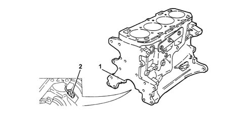

Introduction - ENGINE CRANKCASE
- Path
- Descriptions > 10 ENGINE > 1012 ENGINE CRANKCASE > Introduction - ENGINE CRANKCASE
- Kind
- system description
- Applies to
- engines: 1.6 TS, 2.0 TS, 1.9 JTD 8V, 1.9 JTD 16V; all production periods
- Interactive page
- https://sloeber94.github.io/elrnDB-a147/en/#/3026084
Applies to: engines: 1.6 TS; all production periods
CONSTRUCTION FEATURES
The engine block is cast iron, with high mechanical strength.
The crankshaft is supported by means of five main bearings (1).
The cylinders are formed directly in the engine block, and are graded into three sizes plus one oversize.
There are special channels in the engine block walls which allow the flow of coolant and lubricating oil.
At the bottom of each cylinder, there is a jet (2) from which oil is sprayed onto the piston crown to cool it and ensure the lubrication of the gudgeon pin.
Applies to: engines: 2.0 TS; all production periods
CONSTRUCTION FEATURES
The engine block (3) is cast iron, with high mechanical strength.
The crankshaft is supported by means of five main bearings (1).
The cylinders are formed directly in the engine block, and are graded into three sizes plus one oversize.
The engine block also houses the two counter-rotating shafts, which are supported by a central bush and a ball bearing at the front and rear.
There are special channels in the engine block walls which allow the flow of coolant and lubricating oil.
At the bottom of each cylinder, there is a jet (2) from which oil is sprayed onto the piston crown to cool it and ensure the lubrication of the gudgeon pin.
Applies to: engines: 1.9 JTD 8V; all production periods
CONSTRUCTION FEATURES
The crankcase is in ductile cast iron
The cylinders are formed directly in the engine block, and are graded into three sizes plus one oversize.
The crankshaft is supported by five main bearings (1).
There are special channels in the engine block walls which allow the flow of coolant and lubricating oil.
At the bottom of each cylinder, there is a jet (2) from which oil is sprayed onto the piston crown to cool it and ensure the lubrication of the gudgeon pin.

Applies to: engines: 1.9 JTD 16V; all production periods
CONSTRUCTION FEATURES
The crankcase is in ductile cast iron
The cylinders are formed directly in the engine block, and are graded into three sizes plus one oversize.
The crankshaft is supported by five main bearings (1).
There are special channels in the engine block walls which allow the flow of coolant and lubricating oil.
At the bottom of each cylinder, there is a jet (2) from which oil is sprayed onto the piston crown to cool it and ensure the lubrication of the gudgeon pin.